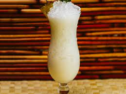

Pina Colada

The Pina Colada is sweet, but balanced, with crisp rum and tart fruit complementing the rich coconut. Whether you're on vacation or just making drinks at home, don't neglect the Piña Colada. Put one of these in everyone's hand, and good times are imminent.
Ingredients
- 2 ounces light rum
- 1 1/2 ounces cream of coconut
- 1 1/2 ounces pineapple juice
- 1/2 ounce lime juice, freshly squeezed
- Garnish: pineapple wedge
- Garnish: pineapple leaf
Steps
- Add the rum, cream of coconut and pineapple and lime juices to a shaker with ice and shake vigorously for 20 to 30 seconds.
- Strain into a chilled Hurricane glass over pebble ice.
- Garnish with a pineapple wedge and pineapple leaf.
Return to main page